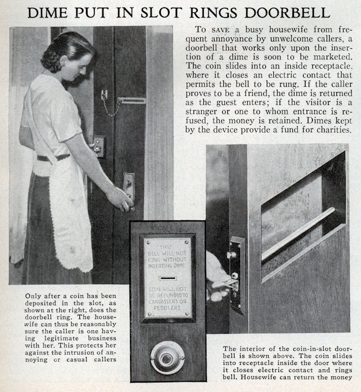

Az alábbi oldal 1933 júliusában jelent meg a Popular Science című folyóiratban. Kíváncsi vagyok kinek mi jut erről eszébe. Nekem egyből az ugrott be, amit a kép alatt olvashattok. Egyébként tudom, hogy a dime tíz cent, szándékosan írtam ötöt. Olvassátok végig a bejegyzést, és rájöttök, hogy miért.

[…] Visszament a konyhába, végigkutatta összes zsebét egy tízcentes után, s mikor végre talált, beindította vele a kávéfőzőt. Beszippantva a számára teljesen szokatlan illatot, megint az órájára nézett, és meglátta, hogy letelt a negyedóra. Élénken az ajtóhoz lépkedett hát, elfordította a gombot, és kioldotta a zárat.
Az ajtó nem nyílt ki.
– Öt centet kérek – szólalt meg helyette.
Átkutatta a zsebeit. Nem talált több érmét, semmit. – Holnap megadom – mondta az ajtónak. Ismét nekifeszült a gombnak, az azonban meg se moccant. – Azt, hogy fizetek neked, egyedül a nagylelkűségemnek köszönheted – győzködte. – Senki sem kötelez rá.
– Én nem így gondolom – felelte az ajtó. – Nézzen csak bele a szerződésbe, amelyet aláírt, amikor megvette ezt a lást (sic!).
Az asztalfiókban rábukkant az okmányra. Aláírása óta sokszor idézett már belőle, különböző érveit alátámasztandó. Affene: az ajtónak a nyitódásért és csukódásért kötelező fizetség jár. Nem borravaló. […]
Philip K. Dick: Ubik


{kind=link}